Last Updated: Jun 10, 2025
CB Specifications
Ballerina Capuchina
Updates and Change Log |
Date | Summary of Changes |
Jun 10, 2025 | Added clarifications in the How to Write Good Rubrics section: - The rubrics should check for POSITIVE logic. Do not ask things like “Does the response omit…” unless it is something specified in the prompt.
|
Jun 5, 2025 | 🚨 🚨 🚨 🚨 ⚠️NEW CHANGE IN INSTRUCTIONS!⚠️ Copy your question in Agent mode (not in ask mode) and paste all the process notes from the response. You need to include 2 process focused rubrics (minimum). See the instructions in Reference Answer Creation and How to Write Good Rubrics sections. 🚨 🚨 🚨 🚨 🚨
🚨 NEW REQUEST! 🚨 Everyone should check out the commit of your task! Follow the instructions here: Checkout the Proper Commit.
—--------------- 🚨 Taxonomy change 🚨: Gemini 2.5 Pro and Grok-3-beta Answer Collection Added! 🚨 Taxonomy change 🚨: Gemini 2.5 Pro and Grok-3-beta Answer Collection Added! 🚨 Taxonomy change 🚨: The full path now should be written as a dictionary to map the file to the full file path. |
Jun 4, 2025 | - Change in [Volume] requirement: Now the minimum number of rubrics per task is 10.
- Added clarification on the use of backticks in the Rubrics and Supporting Context: use backtics for code elements in those sections (NOT in the prompt).
- Added reminder (BIG): The questions SHOULD NOT mention the PR or the commit. The questions are not about the issues in the PR. The questions are about the repository. The PR is there just to help you diversify the questions you make, so you can focus on different files and functionalities.
|
Jun 2, 2025 | |
May 27, 2025 | - Updated requirements on Rubrics and Types of Questions
|
May 26, 2025 | Initial document draft |
Table of Contents
📚 Project Resources
🌎 Overview
🎯 Project Objectives
What Do You Have to Deliver?
📋 Project Prerequisites Checklist
A Note on Cursor Usage
🛠️ Task Workflow
⚙️ Repo Setup Terminal Commands Cheat Sheet
🪜 Detailed Workflow Steps
1. Context Gathering: Read the repository’s README.
2. Repo Cloning: Open an empty directory in Cursor and clone the repository then checkout to the relevant commit from the task
4. [For Bug Fixing and Troubleshooting Tasks] Checkout the Proper Commit: If you wish to use the PR as inspiration: cd into the repository and checkout the commit hash and create a fork of the repository from that hash
5. Question Writing:
Tip for steps 5 and 6: Test the Question in Cursor
7. Rubric Creation: Use the How to Write Good Rubrics section for guidance.
7. Rubric Supporting Context: You will provide justifications as to why each of the rubrics you wrote need to be included in the Rubric list.
8. Submission: Submit the Task.
How to Write Good Questions
Example questions:
Question Styles and Diversity:
How to Write Good Answers
How to Write Good Rubrics
Types of rubrics: Critical vs Non-Critical
Types of rubrics: Fails vs Successes
Things to avoid when writing rubrics
Example Rubrics Link
Rubric Best Practices
👍 Best Practices
🥇 Example of Rubrics - Cursor Asks
📌 Cursor Tips
📚 Project Resources
🌎 Overview
🎯 Project Objectives
In these tasks, you will generate questions and rubrics for LLM responses that will help developers gain context of different repositories.
- You will be focusing on a repository. Your task is to become an expert on the repository to generate a question for Cursor for that repository.
- Choose one of the question categories to create your question. The questions will be about the repository. The questions SHOULD NOT mention any content from the solution in the PR or the commit. The PR is there just to help you diversify the questions you make, so you can focus on different files and functionalities. You can read the explanations for these in the Question Styles and Diversity section.
Question on Implementation Details & Internal APIs |
Debugging/Troubleshooting Questions |
Code Structure / Architecture Questions |
Question on Best Practices and Patterns in the Repository |
Performance & Scalability Question |
Refactoring/Improvement Question |
- After writing the question, you will create a series of Rubrics (yes/no questions) that will be used to assess whether a model response in Cursor’s AGENT mode is truly a good response for this prompt. The rubrics should be complete enough so that the reference answer you wrote fails 60% of the rubric items. We will check all of our rubrics against Claude 3.7 Sonnet.
What Do You Have to Deliver?
These are the task fields that will be delivered to the customer. They will give the prompt to an LLM, and then grade the LLM's response based on the rubrics you submit.
- Question (1): A prompt/question that helps the model extract relevant background information or clarify technical details related to the codebase.. This input will be used as the initial user prompt during model training, so it should invite the model to explore the why, how, or impact of any proposed changes, rather than jump into implementation.
- Reference Answer (1): Use Claude Sonnet 3.7 in Cursor to generate a high-quality sample response to your question. This answer should demonstrate what a good LLM output would look like when responding to your prompt.
- Rubrics by question: A list of at least 10 yes/no questions to assess the model's response (in Agent mode) to your prompt. The reference answer from Claude 3.7 should FAIL 60% of these. Each rubric item should be:
- Objective (answerable as yes or no),
- Atomic (each question checks one thing),
- Self-contained (understandable without extra context),
- Focused on clarity, completeness, accuracy, and relevance of the model’s answer to your context-seeking question.
- YOU ARE ONLY ALLOWED TO USE Deepseek TO HELP YOU IN RUBRIC WRITING (Not Claude or other models).
The rubrics will be used to check an ideal model response. This response should have the expected information/code changes.
The items in the rubric can be evaluated as true or false for any given response to the prompt. If you follow each item in the checklist, you can write an ideal response.
- Mapping of Rubrics to the Supporting Context Justification: In a numbered list, write the justification for the inclusion of each of your rubrics.
📋 Project Prerequisites Checklist
You’ll need to use Cursor to help you understand the repository and the code needed to create good questions and rubrics. To work on Cursor SWE Agent problems, you will need the following:
Tools
A Note on Cursor Usage
We provide contributors with Cursor, an LLM coding assistant. This is strictly meant to help you improve your responses and code understanding for the project.
In case you use Cursor, you can set the Agent mode while experimenting with the prompts.
Use Deepseek to help you write questions, and Claude 3.7 Sonnet for the reference response.
You can check the Cursor Tips section in this document to get acquainted with the main functionalities of this tool.
🛠️ Task Workflow
STEP 0: You need to clone the repository locally to use Cursor and help you with the task workflow. This workflow includes all commands you need to run, which can be copy + pasted directly (with appropriate fields like GitHub URI and commit hash pasted in).
⚙️ Repo Setup Terminal Commands Cheat Sheet
These are the terminal commands needed to set up your environment. This involves cloning the repository and checking out the commit (if relevant).
Starting from an empty directory in Cursor:
- git clone <repo_URI> app/
- cd app/
- git checkout -b YOUR_BRANCH_NAME <commit_hash>
This will enable you to ask questions to the model in Cursor.
🪜 Detailed Workflow Steps
Context Gathering: Read the repository’s README.
Your objective is to understand the repository and how its logic works. Before moving onto the next step, you should be able to know the use cases for the repository.
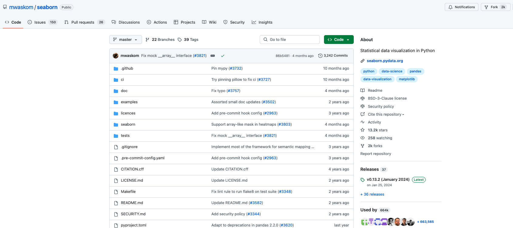
Repo Cloning: Open an empty directory in Cursor and clone the repository then checkout to the relevant commit from the task
- Use git clone <repo_URI> app/
- Always add app/ as an argument to make sure the repository is cloned in the app folder.
Note that this step will help you get to know the repository you’ll be working on and optimize your questions. It will also help you check sample responses to the prompt to help you guide your rubric writing.
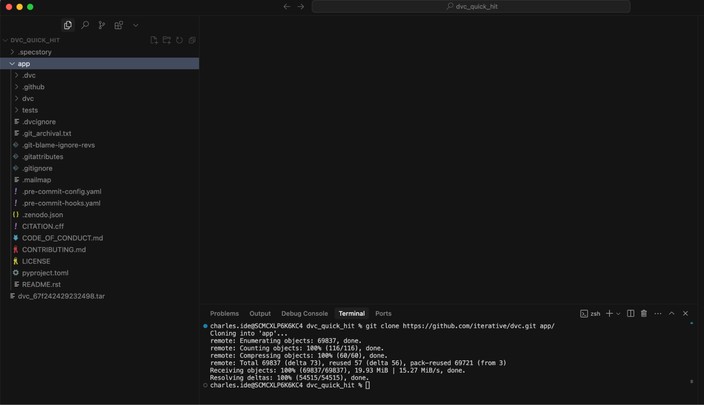
4. Checkout the Proper Commit: cd into the repository and checkout the commit hash and create a branch of the repository from that hash
- cd app/
- git checkout -b YOUR_BRANCH_NAME <commit_hash>
This step restores the repo to the state of the PR you are working on. This enables you to work within the codebase as it would be for an agent attempting to solve this problem.
Unlike the previous step, this is optional.
Here is a video of an example of how to set up the repo and branch in Cursor: Video
Note: in the video you check out the previous commit. Here you check out the hash that we give you in the task
5. Question Writing:
In this section, write 1 question you may ask Cursor to help you understand a specific topic related to the repository. The questions can be related to the repository or the issues/modules/functions mentioned in the GitHub issue / PR, but
The questions SHOULD NOT mention the solution of the PR or the commit. The questions are about the repository. The PR is there just to help you diversify the questions you make, so you can focus on different files and functionalities.
- You can use the PR commit messages (if any) and the comments in the code to help you identify different modules/functionalities you may ask Cursor about.
- Do not copy the exact examples from the GitHub Issue Descriptions when providing code-replication snippets in your questions.
- Use Cursor to help you understand the code: Ask for code explanations proving context of the files (use @file_name and line numbers to provide context to the agent).
- If your question references files: add the full path in the “Write the full path file” field.
- If your prompt doesn’t mention any files, write N/A
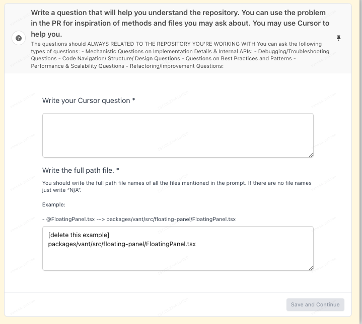
6. Reference Answer Creation: Collect an answer to your question with the help of Cursor and Claude Sonnet 3.7 in Agent mode.
- Step 1: Open a new chat window.
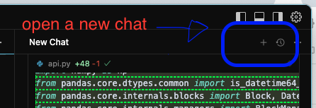
- Step 2: Select Claude Sonnet 3.7 in your chat window.
- By default, the selected model is “Auto” and you might find the mode Ask (Claude 3.5 Sonnet). Disable the autoselect and choose Claude 3.7 Sonnet and Agent for your reference ground truth answer.
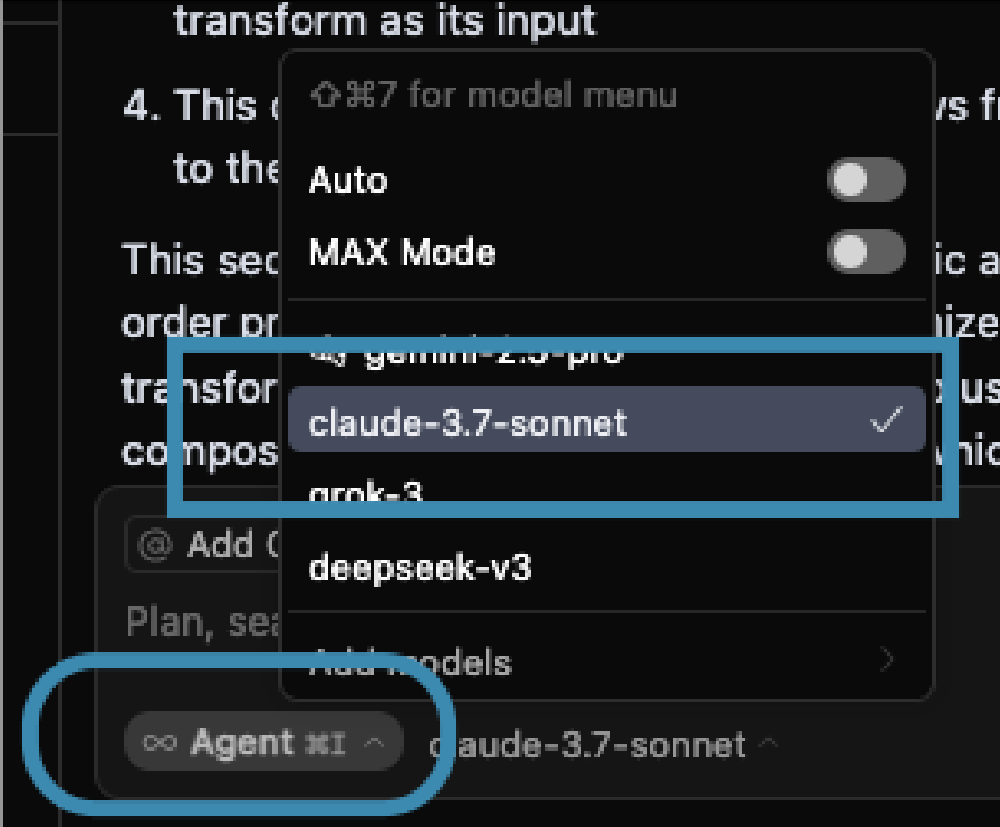
- Step 3: Check that the answer is given in Agent mode
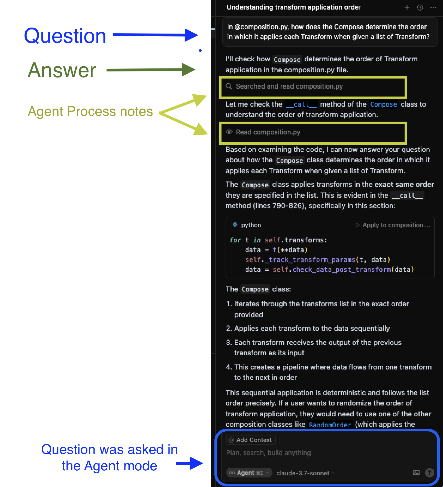
- Step 4: Use the “Copy Message” button in Cursor (present after the response ends) to make sure the whole answer including process notes is copied properly.
- Step 5: Paste the full copied answer in Outlier, while ensuring that the Agent’s Process notes are included.
The information in the answers (The Source) may come internally, from the repository, or externally, for example, when asking about best practices and design patterns.
7. Gemini 2.5 Pro and Grok-3-beta Answer Collection: Use two new chat windows in Cursor to get two new answers to your question in Cursor’s Agent mode.
- Step 1: On the same repo in Cursor, open a new chat:
- Select the other model in the chat window:
- Paste your question again in the chat.
- Copy the answer and paste it in your task under the correct model field.
- Repeat for the other model, also in Agent mode.
These two new answers will be used for comparison. Paste them in their respective fields in the task..
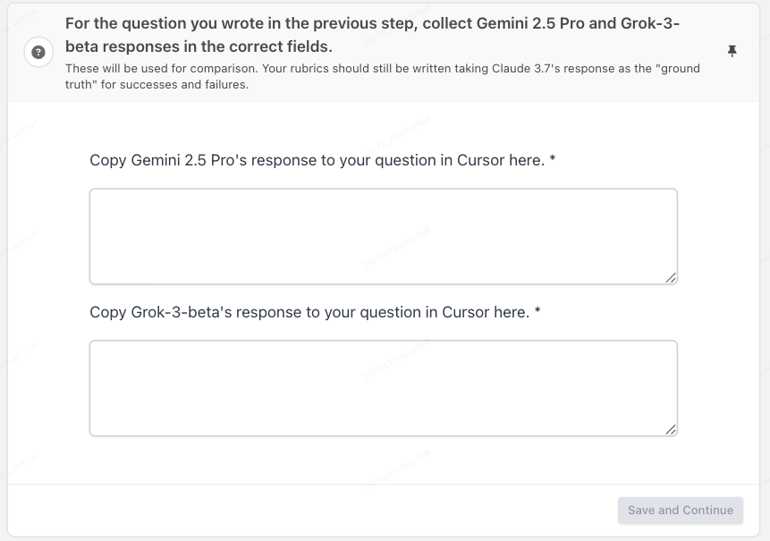
8. Rubric Creation: Use the How to Write Good Rubrics section for more detailed guidance.
In this section, you will write rubrics that will be used to grade a response given by an LLM to your question. This rubric should be detailed and easily scorable with each rubric item having a definitive True/False answer. A reviewer or LLM should be able to grade the response to the prompt against your rubric using just information from the rubric. Please use the How to Write Good Rubrics section for more detailed guidance.
- There must be at least 10 rubric items per question
- Write them in a continuous numbered list.
- [NEW June 5th!] There should be a minimum of 2 rubrics that focus on the Agent’s processes (use cursor’s Agent mode to check). [Look at the How to find Cursor’s Agents processes section ]
- The Agent’s processes are all the little notes you get in a Cursor answer given in Agent mode. These processes tell the user what the agent is doing in the back end to find the correct answer to your question.
- You should check that the processes that are being triggered by your response are appropriate. This means that you can check:
- That the correct files are being searched and read
- That no processes are being unnecessarily repeated.
- You can check the documentation for all of Cursor agents’ default modes here.
- The rubrics should be complete enough so that the reference answer you wrote fails 60% of the rubric items.
You will classify your rubrics between Critical and Non-Critical, and between Success rubrics, and Fail rubrics. Good rubrics should be aspirational and should contain items that these responses fail to include that could make them even better.
Types of rubrics: Critical vs Non-Critical
Types of rubrics |
Critical | Non-Critical |
- These are the rubrics that MUST be answered with “Yes” for a response to be considered good.
- Think of them like the main requirements from the prompt. For example, if the prompt requested a Python function that adds two numbers, the response must include that function and mention that that function has been added.
- There must be at least ONE critical rubric fail.
| - These are the nice-to-have rubrics that make the response complete and more well-rounded.
- Think of these as “nice-to-haves” that aren’t critical for the response’s correctness. For example, if the prompt didn’t request for inline comments explaining the new functions, inline comments should still be included as a rubric item in this section.
|
Types of rubrics: Fails vs Successes
Types of rubrics |
Fails | Successes |
- These are the rubrics that the reference answer failed to comply with.
| - These are the rubrics that the reference answer included.
|
See How to Write Good Rubrics for a more detailed walkthrough on how to write a good rubric. In Rubric Best Practices you’ll find general guidance for rubrics practice.
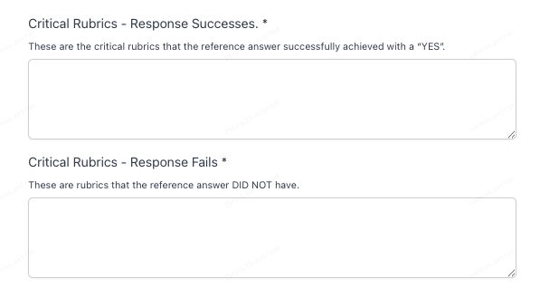
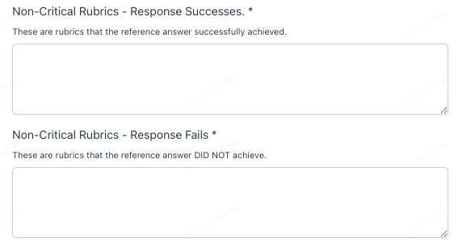
9. Rubric Supporting Context: You will provide justifications as to why each of the rubrics you wrote need to be included in the Rubric list.
- There should be a one-to-one mapping between the supporting context and the rubrics you wrote
- Write the supporting context in a numbered list: The number of the supporting context item needs to match the number of the referenced rubric.
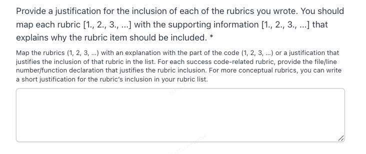
10. Submission: Submit the Task.
How to Write Good Questions
These are questions that will help a developer get more context on the repository you are working with. The questions should mirror how you’d use LLMs in your everyday usage when coding. Try to follow this advice:
The questions SHOULD NOT mention any content from the solution in the PR or the commit. The questions are about the repository. The PR is there just to help you diversify the questions you make, so you can focus on different files and functionalities.
Start a new conversation in Cursor in the AGENT mode when you want to get the ground truth/reference answer for the task.
- Focus on different criteria related to the repository and the code functionalities in the code source files. Check the Question Styles and Diversity section for different types of questions you may ask in different tasks.
- Try to ask hard questions that will stump the model. That is, questions that the model is not able to provide a full answer.
- Harder prompts rely on data from multiple parts of the codebase that require the agent to synthesize knowledge from multiple files, especially how multiple files interact
- The questions should be about the code in the repository. For example, if you’re working on the Pandas repository, you should ask about the implementation of Pandas as if you were a developer working on the Pandas implementation, not something like “how do I create a DataFrame in Pandas”
- The questions need to be realistic (NO FANCY FORMATTING such as markdown).
- Avoid backticks and markdown, such as ###, in the questions.
- Don’t just copy the question examples as templates. Be creative.
- Use casual language. Don’t be formal.
- Avoid writing questions that look like GitHub issue descriptions: Think about what a developer may ask a coding agent when using a repository.
- If your task has an issue description with replication code, you can use that as INSPIRATION for the files and modules you may want to mention in your question.
- Be precise: Try to match the level of precision you’d normally provide when prompting an LLM, but do not leak the PR solution if you are using the PR as inspiration!
- For debugging-type of questions, describe or mention the relevant existing code or functionality if needed: The questions should include the relevant information for the Agent to address the problem.
- Reference relevant files: Reference other files by using the @file_name convention in Cursor that provides that file as context.
Example questions:
["performance_question"] | What is the impact of replacing the in-memory update logic with a persistent traversal-based index updater in the keyValueIndexed database on the consistency, performance and modularity of the OrbitDB system? |
["debugging_question"] | I am seeing a noticeable delay when expanding the suggested list, where the chat bubbles in the messageContainer adjust their position too late. Can you help me identify what part of the layout update in messageContainer might be causing this lag, and tell me how to synchronize the layout changes? |
["implementation_details"] | Can you explain how jobs are defined and configured in @job_config.py as well as what other configuration options are available? |
Question Styles and Diversity:
The questions you submit should be diverse in style and content. Use the following list as inspiration, as you might find more different styles of questions related to your PR problem that you can ask Cursor.
Type of Question | Explanation | Example |
Questions on Implementation Details & Internal APIs: | These focus on understanding how specific code components work or produce results within the context of the problem.
Ask about how specific classes, methods, or modules in the repo are implemented or intended to be used. May involve describing function signatures, clarifying input/output | - Example Question: "Can you explain the logic flow within the process_data function in @data_utils.py, and describe how it transforms the input data based on the parameters, especially in relation to how its output is utilized or further processed in @model_pipeline.py?"
- Example Question: "How should I correctly instantiate and use the ConfigurationManager class to access the database connection string needed for this feature, and how does this approach align with the initialization and usage patterns observed in both @config_loader.py and @database_client.py elsewhere in the repository?”
|
Debugging/Troubleshooting Questions: | These focus on diagnosing issues or understanding unexpected behavior related to a problem. The answer to these questions should explain or guide a troubleshooting process for errors found in the repo, including reading logs, stack traces, or error messages.
You can ask about verification checks for thoroughness in root cause analysis and clarity in describing how the repository’s codebase might produce or handle specific errors.
| - Example Question: "I get a KeyError: 'user_id' when processing the exported data. Can you identify where this error is occurring and fix it? It seems like the issue might be in@data_parser.py and @data_validator.py. I need to make sure the data handling is robust and and I need to ensure robust and fault-tolerant data handling in line with the repository’s practices."
|
Code Structure/ Design Questions | These focus on understanding the organization, relationships, or overall structure of the codebase relevant to the problem. The answers to these questions should provide high-level explanations about how the repo’s modules, services, or data layers are structured, why they are designed that way, or how various components interact.
| - Example Question: "Describe the relationship between the User model, the AuthenticationService, and the LoginHandler within this project structure, particularly as they relate to the user login issue mentioned."
|
Questions on Best Practices and Patterns: | They aim to get recommendations for coding standards, design patterns, or library usage within the context of the repo’s language, frameworks, or domain.
| - Example Question: “What are the design patterns that organize service logic across @api_routes.py and @service_layer.py to keep the separation of concerns and allow scalability within the framework used in the repository?
|
Performance & Scalability Questions | Offer conceptual and code-level advice on optimizing and scaling the repo’s implementation. Verification checks the alignment of suggestions with known performance patterns (e.g., caching, load balancing) and correctness in referencing relevant parts of the provided code. | - Example Question: What is the impact of replacing the in-memory update logic with a persistent traversal-based index updater in the keyValueIndexed database on the consistency, performance and modularity of the OrbitDB system?
|
Refactoring/Improvement Questions: | These focus on asking the AI for suggestions on improving existing code relevant to the problem. Another way to use the AI to "help you solve the problem", focusing on improving the code quality, efficiency, or maintainability in the area affected by the problem statement.
| - Example Question: "Can you suggest ways to refactor the redundant code blocks found in ModuleA.py and ModuleB.py that handle similar data validation logic, making it more DRY (Don't Repeat Yourself)?"
|
How to Write Good Answers
The answers you write are the reference you will use for your rubrics in the next step. These answers should include all the relevant information to provide a perfect answer to your question.
- Write your question in Cursor and select Claude Sonnet 3.7 in AGENT mode.
- Submit the question.
- Copy the answer in the task.
- Use the answer as a base guide for your rubric creation.
The information in the answers may come internally, from the repository, or externally, for example, when asking about best practices and design patterns.
How to Write Good Rubrics
The rubrics are a list of specific and simple questions that can be evaluated as true or false for any given response to the prompt. Consider all the elements you need to include to create a perfect response and put them into the rubric. You should review the evaluation criteria for the different dimensions your rubrics will be evaluated on. You should also review the common errors section for examples of good and bad rubrics.
We differentiate between critical and non-critical rubrics, between fail and success rubrics.
See the Types of Rubrics section to understand the differences between them. |
You should ALWAYS check for the following:
Formatting Comments
- Each item in the rubric MUST be written in a new row in a numbered list.
- Start the questions with “Does the response…” / Does the code…?
- The minimum number of rubrics per question is 10.
- Write any code references (functions, classes, files) between backticks `` in the Rubrics and the Supporting context.
General guidelines / evaluation criteria:
- There must be at least 10 rubric items per question.
- The rubrics should check for POSITIVE logic. Do not ask things like “Does the response omit…”
- The rubrics should be complete enough so that the reference answer you wrote fails 60%+ of the rubric items.
- [NEW June 5th!] You need to include at least 2 agent process focused rubrics as the answer should be given in Agent mode. See the How to find Cursor’s Agents processes section to know where to find them.
- There should be a minimum of 2 rubrics that focus on the Agent’s processes (use cursor’s Agent mode to get your reference questions).
- The Agent’s processes are all the little notes you get in a Cursor answer given in Agent mode. These processes tell the user what the agent is doing in the backend to find the correct answer to your question.
Example of the “Read” process in a task:
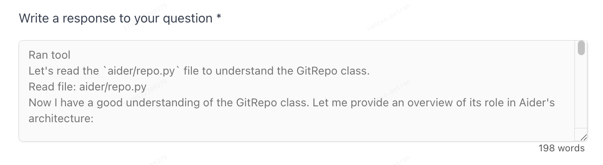
Example of Agentic Process Rubric: “Does the response explicitly demonstrate that it read the `aider/repo.py` file?”
- You should check that the processes that are being triggered by your response are appropriate. This means that you can check:
- That the correct files are being searched and read.
- That no processes are being unnecessarily repeated.
- That the correct tools are being used.
- You can check the documentation for all of Cursor agents’ default modes here.
- These process rubrics can start with “Does the agent…”/ “Does the response…” / Does the code…?
- [Specificity] The criteria should be objective and the criteria to check the rubric should be binary (true or false). This means every question can be answered with a simple yes/no response.
- The rubric should directly include explicit instructions or measurable conditions, meaning that the answer can be checked factually based on the details in the rubric. Everyone who answers these questions should consistently arrive at the same conclusion.
- [Atomicity] Each rubric question should evaluate exactly one distinct aspect.
- [Diversity] The rubric items should include variable types of information.
- If all criteria are like “the response mentions A”, “the response mentions B”, then this is not a good rubric.
- [Completeness and No Overlapping] The rubrics should be Mutually Exclusive and Collectively Exhaustive:
- There shouldn't be any overlapping between the different rubric points, and the rubrics should be exhaustive enough to consider all the elements needed for a perfect response.
- For completeness: At least one of the rubrics should be about code examples/snippets that should be present in the response.
- [Self Contained] Each rubric item must be self-contained. This means that they contain all the information within the rubric that is needed to determine whether the response is True or False
- ❌ Does the response discuss the differences between `foo` and `bar`?
- ✅ Does the response discuss at least two of the following differences between `foo` and `bar`: runtime complexity, implementation difficulty, overhead?
- [Difficulty] The full rubric should be difficult for the best models to achieve, with the best models scoring “Yes” on no more than 40% of the rubric items
- [Volume] There should be at least 10 rubric items per question
❌ DO NOT USE CLAUDE OR GPT TO HELP YOU IN RUBRIC WRITING:
- ✅ ONLY USE DEEPSEEK TO HELP YOU WITH RUBRICS
Types of rubrics: Critical vs Non-Critical
Types of rubrics |
Critical | Non-Critical |
- These are the rubrics that MUST be answered with “Yes” for a response to be considered good.
- Think of them like the main requirements from the prompt. For example, if the prompt requested a Python function that adds two numbers, the response must include that function and mention that that function has been added.
- There must be at least ONE critical rubric fail.
| - These are the nice-to-have rubrics that make the response complete and more well-rounded.
- Think of these as “nice-to-haves” that aren’t critical for the response’s correctness. For example, if the prompt didn’t request for inline comments explaining the new functions, inline comments should still be included as a rubric item in this section.
|
Types of rubrics: Fails vs Successes
Types of rubrics |
Fails | Successes |
- These are the rubrics that the reference answer failed to comply with.
| - These are the rubrics that the reference answer included.
|
- Critical Rubrics - Response Successes.These are the critical rubrics that the reference answer successfully achieved with a “YES”. Think of them like the main requirements from the prompt. For example, if the prompt requested a Python function that adds two numbers, the response must include that function and mention that that function has been added. If it does, it is a Critical Success and must be included as a rubric item in this section.
- Critical Rubrics - Response Fails. These are rubrics that the reference answer DID NOT have. For example, if the prompt requested a Python function that adds two numbers, the response must include that function and mention that that function has been added. If it doesn’t, it is a Critical Fail and must be included as a rubric item in this section.
- Non-Critical Rubrics - Response Successes. These are rubrics that the reference answer successfully achieved. Think of these as “nice-to-haves” that aren’t critical for the response’s correctness. For example, if the prompt didn’t request for inline comments explaining the new functions, but the response includes these comments and they’re correct, it can be considered a non-critical success and should be included as a rubric item in this section.
- Non-Critical Rubrics - Response Fails. These are rubrics that the reference answer DID NOT achieve. For example, if the prompt didn’t request for inline comments explaining the new functions, and the response doesn’t include these comments, it can be considered a non-critical fail because it’s good practice to add them and should be included as a rubric item in this section.
Things to avoid when writing rubrics
❌ Avoid overlapping criteria:
- ✅ Each rubric item should deal with one specific dimension. This is because the same error from a model shouldn’t be punished multiple times.
❌ There should be NO vague descriptions.
- E.g., "the response must be accurate" is a vague description.
❌ Avoid general and undescriptive terms like "good" or "bad", “appropriate”, “correctly”...
❌ Avoid rubrics that can lead to subjective interpretations of the criteria.
❌ Avoid bundling multiple criteria into a single rubric.
- ✅ Most stacked criteria with the word “and” can be broken up into multiple pieces.
❌ Only mentioning items that are present in the reference answer: The reference answer should FAIL 60% of your rubrics.
❌ DO NOT USE CLAUDE OR GPT TO HELP YOU IN RUBRIC WRITING:
- ✅ ONLY USE DEEPSEEK TO HELP YOU WITH RUBRICS
Rubric Best Practices
How to find Cursor’s Agents processes:
You can see the Agent’s actions written in grey in the answer you get. Here you can find the documentation for the tools Cursor Agents can use.
The Agent’s processes are all the little notes you get in a Cursor answer given in Agent mode. These processes tell the user what the agent is doing in the back end to find the correct answer to your question.
👍 Best Practices
Setup
- Take your time to understand the repository. Look into the PR and diff files for more specific questions..
- Make use of GPT or Claude to understand the problem properly (but don’t ask them to write code for you). Use plenty of time to make sure you understand the issue and why the changes in the PR will solve the problem in your prompt.
📌 Cursor Tips
In Cursor, you have different chat modes that can help you interact with the code: Ask, Agent and Manual.
- Ask: This mode does not make code changes or run terminal commands; it relies entirely on your specific instructions and the context you provide just as a regular LLM. It can read files and the context you provide, but without the ability to make any changes on its own.
- Agent: This mode is the most autonomous one in Cursor and it is designed to handle complex coding tasks with minimal guidance.
- Manual: Makes precise code changes with explicit file targeting. It is a focused editing mode with user-controlled tooling.
Cursor Tip 1: These modes can be customized. For example, in the Ask mode, you can choose the Search Codebase option to let the cursor search the codebase in this mode.
Cursor Tip 2: Use @file_name in your prompt to add file context in Cursor.
Example of Cursor for checking or writing prompts: Video